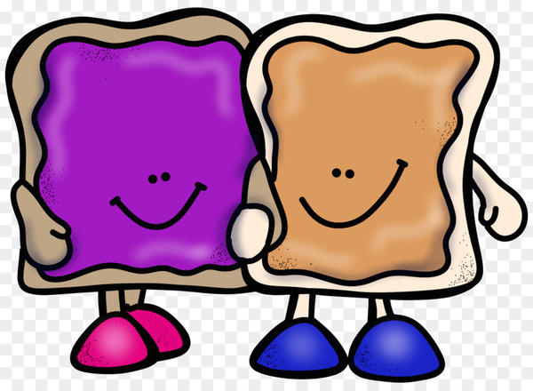
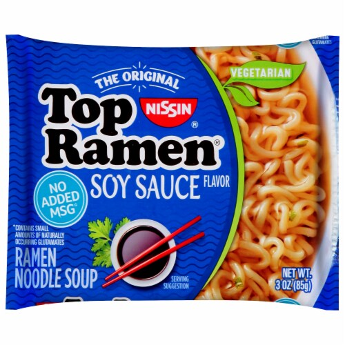
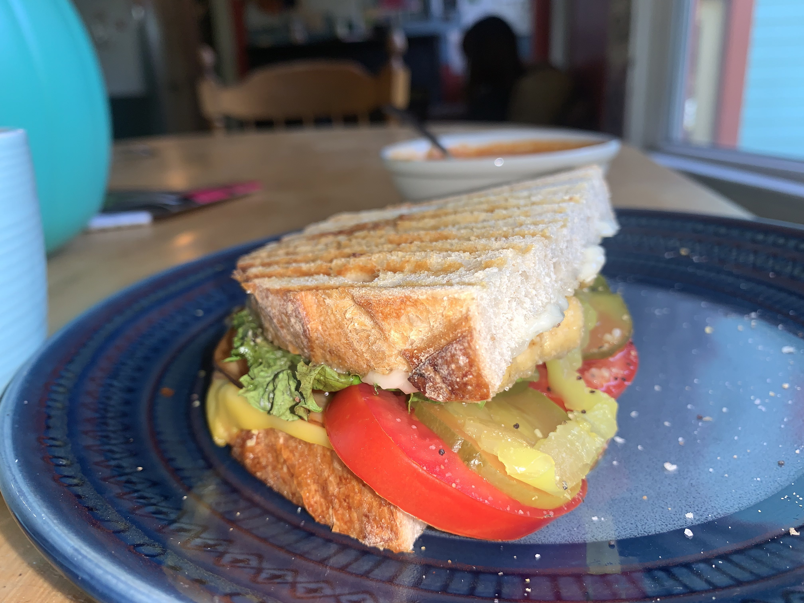

Peanut Butter & Jelly Sandwich

Peanut butter and jelly sandwiches are a simple and quick meal.
What you'll need:
- Two slices of bread
- A spoonful of peanut butter
- A spoonful of jelly
How to assemble:
- Take your two slices of bread and lay them flat on a plate.
- Spread the spoonful of peanut butter one the inside of one of the slices of bread.
- Spread the spoonful of jelly on the inside of the other slice of bread.
- Combine the two slices of bread, connecting the peanut butter to the jelly.
- Eat and enjoy!
Instant Ramen Noodles

Nothing is easier and more delicious than instant ramen, especially the soy sauce flavor of Top Ramen.
What you'll need:
- A small saucepan or pot
- Two cups of water
- One pack of Top Ramen Soy Sauce Flavor
How to assemble:
- Add two cups of water to a small saucepan or pot.
- Place your saucepan or pot on the stovetop and bring to a boil.
- Add your block of noodles from the pack to the pot. Place the flavor packet to the side. Boil the noodles for 2 minutes.
- Remove from heat and add the soy sauce flavor packet to the pot. Stir well.
- Optional: pour ramen into a bowl. Otherwise, just eat it straight from the pot!
The Best Vegan Sandwich

This is my go-to lunch when I'm feeling inspired. Super simple and delicious!
What you'll need:
- Spray oil
- Two slices of bread of your choice
- Two spoonfuls of Vegenaise
- A slice of meltable vegan cheese
- A slice of Tofurky Plant-Based Deli Slices
- Two slices of tomato
- 3-4 dill pickle chips
- 3-4 slices of banana peppers
- A piece of lettuce
- A sprinkle of garlic salt and pepper
- A panini press
How to assemble:
- Turn on your panini press. Once it is hot enough, spray your oil on both sides.
- While your panini press is heating up, place your two slices of bread on a plate. Add your spoonfuls of Vegenaise to the inside of each slice.
- Add your slice of vegan cheese to the inside of the bottom slice of bread.
- Add your Tofurky slice on top of the vegan cheese.
- Add your slice of tomato on top of your Tofurky. Then, add your pickles and banana peppers.
- Top off your sandwich ingredients with the piece of lettuce.
- Sprinkle your garlic salt and pepper on top of both sides of the sandwich.
- Close the sandwich. Add the sandwich to your panini press.
- Check on the sandwich occasionally. Remove it from the panini press when you are satisfied with how cooked it is. Turn off the panini press.
- Let the sandwich cool for a bit. Eat and enjoy!